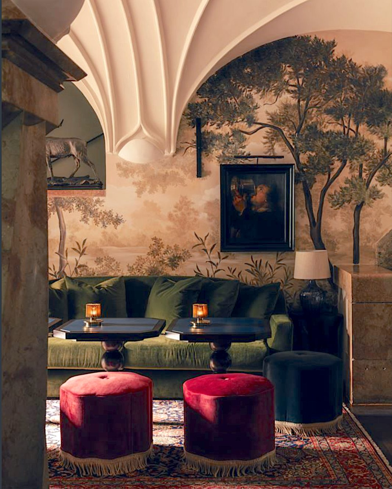
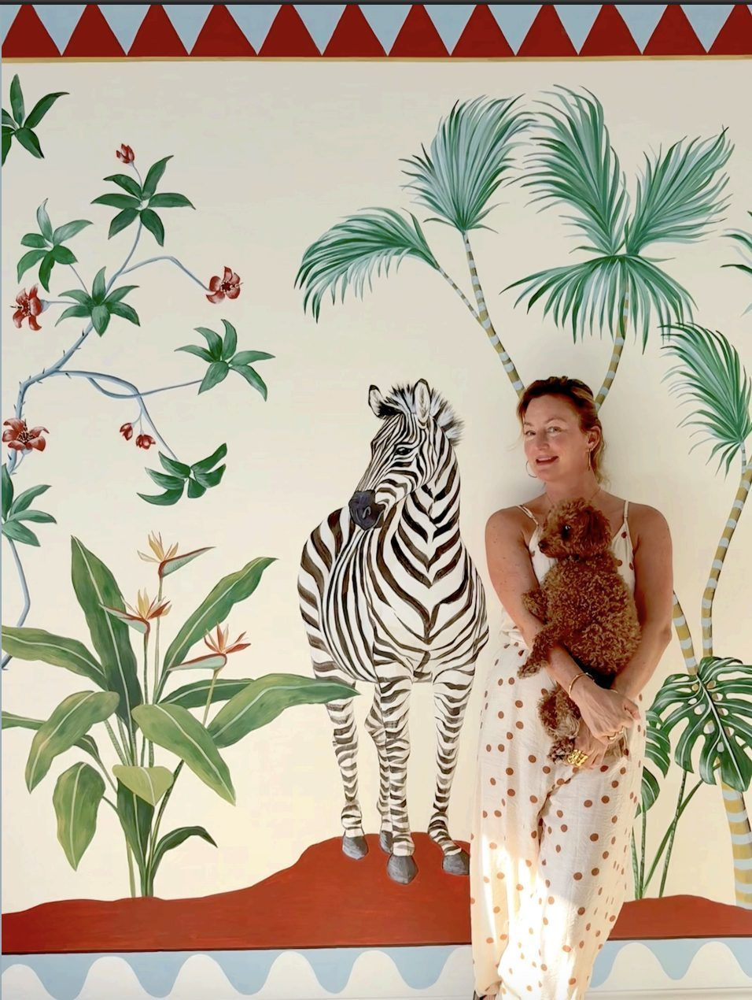

ABOUT
Welcome to the enchanting realm of Marie Hartig's Painted Worlds.
Marie creates site-specific painted environments for private residences and architectural spaces. Each project is conceived as a bespoke artwork, developed in close dialogue with the client and in response to the character of the space.
Marie immerses you within exotic scenes, bringing far flung realities onto your walls. The talented Austrian artist weaves whimsical tableaux, elevating any space into the extraordinary.
Her versatile repertoire includes designs painted directly onto walls, exquisite wallpaper, as well as hand-painted panels and canvas.

Each Wall Painting is a one-of-a-kind creation that carefully reflects the individual tastes and dreams of her clients. Her designs are never replicated, ensuring a distinctive touch for every space.
Drawing on her background in the Fine Arts, Marie's work is also imbued with a passion for natural history and rich cultural influences from across the globe. Her signature style features vibrant menageries of hyper-realistic flora and fauna, alongside graphic abstracts and more landscape painting. Her playful chinoiserie, filled with lively birds and diverse plants against striking backgrounds, remains a favourite.
Marie has created vast murals in the dining rooms of Austrian and German castles, fashionable restaurants and Five Star hotels, in stunning Caribbean beach homes and even in a Buenos Aires children's hospital as well as a pre-school in Mathare, Nairobi.
She has painted living rooms in holiday homes on Mallorca, in stylish London and Milanese apartments and also delivered striking designs in the tiniest of WCs.

Private Residence, Nassau, BahamasMEET MARIE
Marie creates immersive painted environments that bring atmosphere, narrative and artistry into architectural spaces. Her work is known for its sense of storytelling and sensitivity to place, resulting in interiors that feel both personal and timeless.
In 2012, a personal project unexpectedly opened a new artistic direction. Wanting to create a special gift for her young goddaughter, Marie painted the walls of the child's bedroom, transforming the white room into a soft jungle landscape — complete with a lion dozing on the branch of a tree and a curious monkey climbing down to peer into the crib.
The experience was revelatory. While the traditional canvas had always felt somewhat confined, painting within an entire room opened a new dimension of creative freedom. The architecture itself became part of the artwork. She had discovered her medium.
Today, Marie lives in Vienna and works internationally, collaborating with private clients, interior designers and architects to create painted environments that become an integral part of the spaces they inhabit.

Born in Tokyo in 1977, Marie spent her childhood moving across continents with her siblings and parents, Austrian diplomats. She grew up between Japan, Pakistan and Kenya before eventually settling in the United Kingdom. This international upbringing — shaped by diverse landscapes, cultures and visual traditions — continues to influence the poetic and narrative qualities of her work.
Marie studied at the Kent Institute of Art and Design before completing a BA in Fine Arts and Communication at London Guildhall University. Her interest in global culture and politics later led her to pursue a Master's degree in Global Politics at Birkbeck, University of London.
Following her studies, Marie spent more than a decade working in film production. In 2006 she started HOBEN.TV, an international film directors' agency based in London, where she remained a partner until 2021. Throughout her years in advertising and production, painting remained a constant creative thread — a practice she returned to whenever possible.